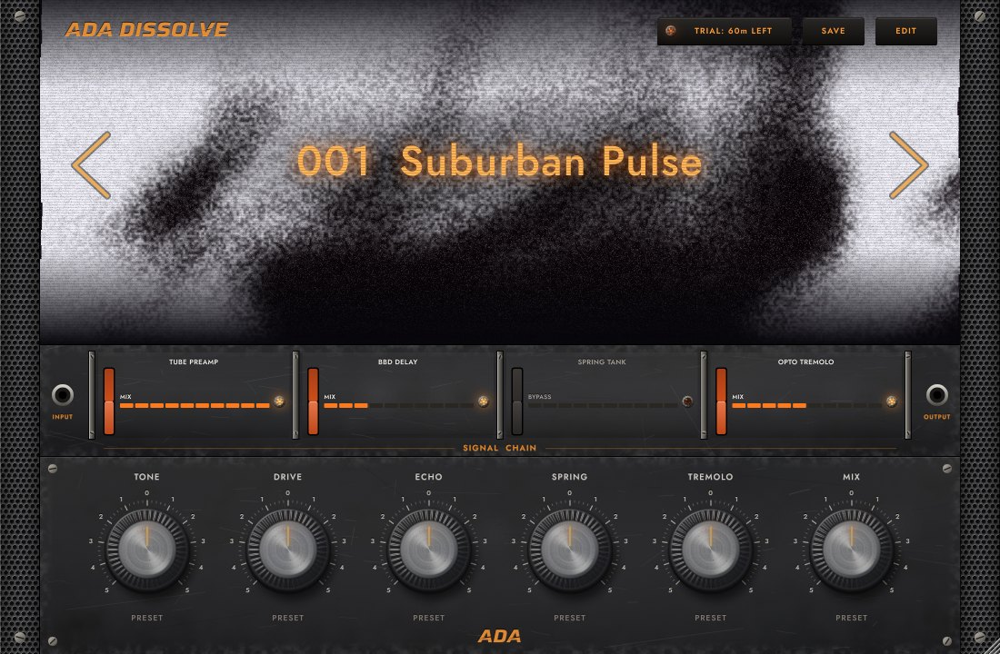

ADA Dissolve
Four old studio machines in one rack: a valve preamp that warms and breaks up, a bucket-brigade delay whose every repeat gets darker, a spring tank you can kick, and a photocell tremolo that breathes.

Old circuits, clean signal
Each block is modelled as a circuit rather than borrowed from a generic effect. Switch blocks on and off, set each one's mix with the fader on its card, and change their order.
It is made for guitars, keys, synths and vocals that need age and air, without hiss in the pauses or digital grit on top.
- GuitarsValve break-up, spring splash and amp-style tremolo.
- Keys and synthsChorus from the bucket-brigade chip and slow, dark echoes.
- VocalsWarmth and short slap echoes that sit behind the voice.
- Sound designFeedback at the edge of oscillation, and a tank that crashes.
The rack
Four blocks in one signal path. Turn a knob and the sound glides; it never clicks.
Tube PreampDual triode, 4× oversampled
Clean headroom at low drive, warm thickening in the middle, honest break-up at the top. Asymmetry adds the even harmonics of a real valve, Tone rounds the top end, and the input stays tight so the bass doesn't turn to mud.
BBD Delay / Chorus4096-stage bucket brigade
A compander, clock noise and filters inside the feedback loop, so every repeat comes back darker. From 5 ms chorus to 900 ms echoes; turning Time bends the pitch like the real chip.
Spring TankWith crash
Real spring drip, and when you hit the strings hard the tank crashes: crack, thump and rattle, like kicking an old amp. It never triggers on a sustained note.
Opto TremoloLamp and photocell
Fast attack, a slower release that lingers in the dark, up to −24 dB deep. Free-running or locked to your DAW's tempo.
Six macros
Tone, Drive, Echo, Spring, Tremolo and Mix move the right parameters of every block at once. Open EDIT for every knob of the chain.
280 presets
24 hand-made sounds and eight families of 32, from Clear Glass to Edge of Feedback, all levelled to the same loudness. Randomize builds a fresh variation of any preset.
Play it for an hour, free
The trial is the complete plug-in with every block and preset. Only the time sound runs through it counts. When the hour is used up, ADA Dissolve bypasses itself, so your mix never goes silent.
On a Mac, see the one-time install step below.
One license, the whole rack
- Tube Preamp, BBD Delay / Chorus, Spring Tank, Opto Tremolo
- 280 presets, six macros, full EDIT page
- VST3, AU and a standalone app
- Activation inside the plug-in, no account or iLok
- One license activates one computer
Secure checkout by Creem, our merchant of record. VAT is included where it applies. 14-day refund if it doesn't run on your system.
Activating your license
ADA Dissolve activates inside the plug-in in a few seconds, then works offline.
Buy
Check out through Creem, or click BUY in the plug-in. The license key is shown right after payment and sent by e-mail.
Open TRIAL
Click TRIAL at the top of the plug-in, then enter your name and paste the key.
Press ACTIVATE
ADA Dissolve unlocks at once, no restart. From then on it works offline.
No internet there?
Click COPY next to the Hardware ID, use the activation page on any device, then LOAD LICENSE FILE.
Installing on a MacmacOS may call a downloaded plug-in “damaged”. Here's the one-time fix.
ADA Dissolve is distributed outside the Mac App Store, so macOS quarantines the download and may say the plug-in “is damaged” or “can't be verified”. The files are fine: the install script removes the quarantine flag.
- Unzip the download and double-click Install ADA Dissolve.command. If macOS blocks it, right-click it, choose Open, then Open again.
- Enter your Mac password when asked. Nothing is shown while you type.
- Installing by hand instead? Copy
ADA Dissolve.vst3to/Library/Audio/Plug-Ins/VST3/,ADA Dissolve.componentto/Library/Audio/Plug-Ins/Components/and the app to/Applications, then run the command below in Terminal. - Restart your DAW or rescan plug-ins. ADA Dissolve is listed under Anima Digital Audio.
sudo xattr -rd com.apple.quarantine "/Library/Audio/Plug-Ins/VST3/ADA Dissolve.vst3" sudo xattr -rd com.apple.quarantine "/Library/Audio/Plug-Ins/Components/ADA Dissolve.component" sudo xattr -rd com.apple.quarantine "/Applications/ADA Dissolve.app" killall -9 AudioComponentRegistrar
Keep the quotes: the file names contain spaces.


Questions?
Installation, activation, moving a license to a new computer, refunds: write to us and we answer by e-mail, usually within a day.